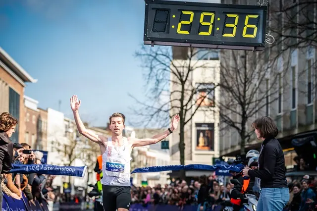

Nieuws ·
Nieuwe strijd tussen Luuk Maas en Abdirahman Mohamed bij Alfa Laval Stevensloop

Volgende week zondag nemen Abdirahman Mohamed en Luuk Maas het tegen elkaar op bij de 10 kilometer van de Alfa Laval Stevensloop. Mohamed wist deze afstand in 2022 te winnen, Luuk Maas in 2023. Bij de vrouwen zijn Ruth van der Meijden en Mélanie Bovy de grootste kanshebbers op de 10 kilometer. Op de halve marathon verdedigt Luc Schout zijn titel. Team Zevenheuvelen is sterk vertegenwoordigd op de 5 en 10 kilometer.
Mohamed in vorm op 10 kilometer voor de Alfa Laval Stevensloop
Voormalig trainingsgenoten Luuk Maas en Abdirahman Mohamed treffen elkaar net als vorig jaar op de 10 kilometer. Toen ging Tilburger Maas er met de overwinning vandoor. Hij deed dit door het parcoursrecord van Mohamed uit 2022 met 7 seconden te verbeteren tot 29:36. Ook het parcoursrecord op de halve marathon staat op naam van de 24-jarige atleet. In 2022 won hij in 1:03:54 de nationale titel in Nijmegen. Maas maakte vorig jaar zijn debuut op de marathon in 2:13. Deze tijd verbeterde hij in oktober in Amsterdam tot 2:11:47.
Mohamed liet dit jaar al zien in goeden doen te zijn. In februari verbeterde hij zijn persoonlijk record op de 10 kilometer naar 28:54, een verbetering van ruim een halve minuut. In zijn thuisstad treft hij teamgenoot van Team Zevenheuvelen Ties van den Hurk. Van den Hurk liep al meerdere keren onder de 30 minuten, met 29:37 vorig jaar in Schoorl als snelste tijd. Mojalefa Kloprogge liep dit jaar in Schoorl 29:49 en start ook in Nijmegen. Laurens Vanderlinden uit België en Andy Coendet uit Zwitserland gaan ook op jacht naar een tijd onder het halve uur.
Van der Meijden lokale favoriet
Bij de vrouwen zijn Ruth van der Meijden en Mélanie Bovy de favorieten voor de overwinning op de 10 kilometer. Van der Meijden won in 2017 het NK halve marathon bij de Alfa Laval Stevensloop. De Groesbeekse heeft een persoonlijk record van 33:17 op de 10 kilometer. De Belgische Mélanie Bovy liep vorig jaar 33:49 op de 10 kilometer.
Luc Schout (titelverdediger en PR 1:05:54) en Marcella Herzog (PR 1:13:22) gaan van start op de halve marathon.
Team Zevenheuvelen op de 5 kilometer
Op de 5 kilometer start een grote groep atleten van Team Zevenheuvelen: Onder andere Milan van der Meer, Martijn Wijnhoven, Marco Otten, Teun ter Haar en Levi Janssen doen mee. Van der Meer won de kortste afstand in 2022 na een zinderende eindsprint. Met 14:11 heeft hij het snelste persoonlijk record van de deelnemers op de startlijst. Hij bezit ook het parcoursrecord op de 5 kilometer (14:25). Naast de atleten uit de senioren-selectie doen bijna alle jeugdleden van Team Zevenheuvelen mee, waaronder Ilja Toonen. Hij behaalde recent zijn eerste NK medaille bij het NK indoor U20: brons op de 1500 meter.
Uitdager van de Team Zevenheuvelen atleten is Mick Wolvekamp. Het 19-jarige talent heeft een snelste tijd van 14:22 op de 5.000 meter achter zijn naam.
Femke Rosbergen is de snelste vrouw op de startlijst van de 5 kilometer. Zij liep al onder de 16 minuten op de 5.000 meter (15:57).
Inschrijven Alfa Laval Stevensloop
De halve marathon en Stevens Stadscross van de Alfa Laval Stevensloop zijn volledig uitverkocht. Op alle afstanden is plaats voor 3000 deelnemers. Voor de 5 kilometer en 10 kilometer is inschrijven nog mogelijk tot en met aanstaande zaterdag 9 maart via www.alfalavalstevensloop.nl.